<html>
<head>
<title>midterm.html<title>
<meta charset="UTF-8">
<link href="https://fonts.googleapis.com/css?family=Itim|Thasadith&effect=fire-animation&display=swap" rel="stylesheet">
<style>
body {
      background-image: url("bk01.jpg");
     }
  h1 {
        font-family: 'Itim', serif;
        font-size: 100px;
      }    
 body {
         font-family: 'Itim', serif;
         font-size: 48px;
        
      }
</style>
</head>
<body>
<p align = "center">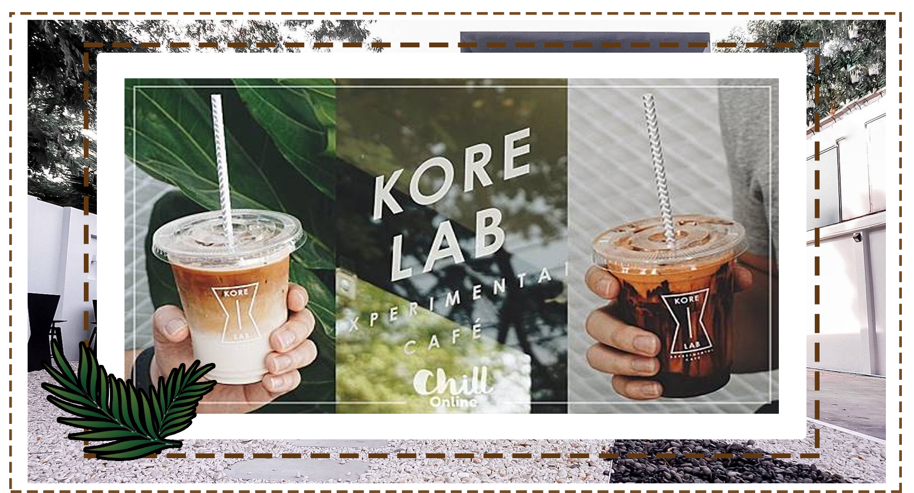
<dl>
<div class="font-effect-fire-animation"><h1><p align = "center"><font color="#F5F5F5"><i>KORE LAB</i></font></h2></div>
<hr width="50%" aling="center" />
<h4><p align = "center">" Welcome Kore Lab"</p></h4>
<hr width="50%" align="center" />

<h4><p align = "center">" ประวัติความเป็นมาของร้าน"</p></h4>
<h6><p align = "center">" สวัสดีค่ะ วันนี้เราจะมาเเนะนำร้านวิวสวย นั่งชิลๆ ร้านกาแฟสไตล์มินิมอลที่รูปแบบร้านโดดเด่น ฉีกแนวจนไม่คาดคิดว่าอยู่ที่พระนครศรีอยุธยา
ชื่อร้าน Kore Lab เป็นการเล่นคำจาก collaborate เนื่องจากมีเจ้าของร้าน 3 หุ้นส่วน บาริสต้า 1 คน ดาราวงการบันเทิง 2
 คนคือคุณดาว และคุณแกงส้ม ที่รวมตัวกันเพราะใจรักในคอกาแฟ เราสอบถามบาริสต้าจึงรู้ว่าร้านนี้เปิดมาได้ประมาณ 4 เดือนเท่านั้น
 แต่เท่าที่สังเกตดู ลูกค้าเดินเข้าร้านมาเรื่อยๆ ยิ่งโดยเฉพาะวันหยุดสุดสัปดาห์แบบนี้ 
 "</p></h6>
<p align = "center">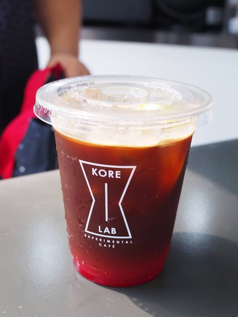
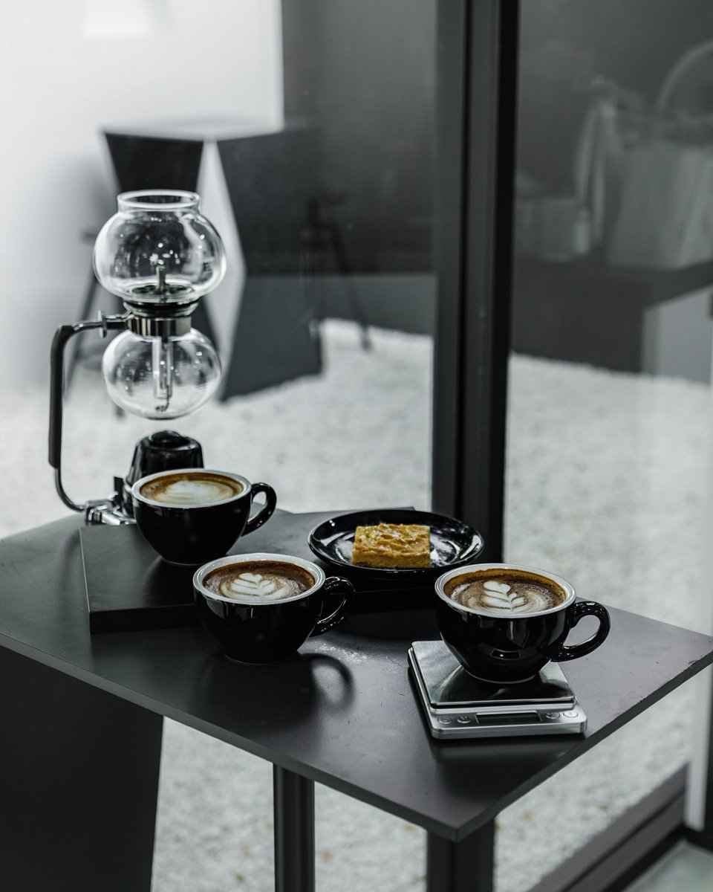
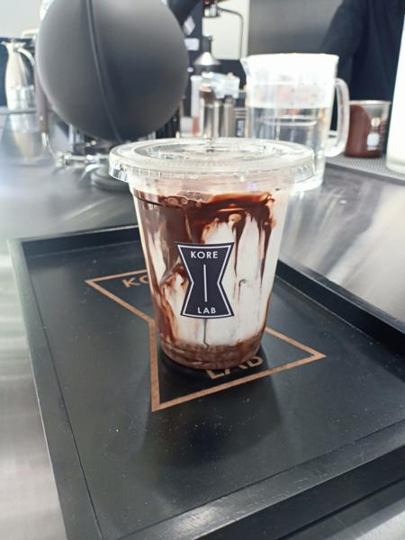
<h6><p align = "center">"เริ่มจากโลโก้ของร้านที่ถอดรูปฟอร์มมาจากแก้วกาแฟดริป ซึ่งมี Core หรือแกนกลาง แทนสัญลักษณ์เป็นน้ำกาแฟที่กำลังหยดลงสู่ก้นแก้ว รูปฟอร์มแก้วกาแฟดริปนั้นกระจายตัวอยู่ในจุดที่สังเกตได้ด้วยตาเปล่า ตั้งแต่ช่องเปิดอาคารด้านหน้า บนพื้นหินกรวดสีดำด้านหน้าประตูทางเข้า ช่องที่เจาะอยู่บนแนวกำแพงสีขาวใต้ต้นก้ามปูยักษ์ โต๊ะกาแฟริมกำแพงด้านนอก รวมไปถึงด้านหน้าของเคาน์เตอร์ชงกาแฟด้านในร้าน
บนที่ดินรูปสี่เหลี่ยมผืนผ้า แกงส้มวางตำแหน่งอาคารหลักไว้บริเวณส่วนหน้าของที่ดินตามระยะร่นของการสร้างอาคารตามกฏหมายผังเมือง แล้วผลักลานจอดรถไปซ่อนไว้ด้านหลังอาคาร โดยตัวอาคารหลักมีขนาดพื้นที่ใช้สอยราว 25 ตารางเมตร คุมโทนสีขาว-ดำเป็นโทนสีหลัก กรุผิวอาคารด้วยไม้อัดซีเมนต์บอร์ดทาสีดำ ด้านหลังอาคารแบ่งฟังก์ชันเป็นห้องน้ำชายและหญิง รวมถึงห้องเก็บของ และทางเดินเข้าจากลานจอดรถด้านหลัง ส่วนภายในออกแบบเคาน์เตอร์บาร์ที่สามารถเป็นที่นั่งแลกเปลี่ยนบทสนทนาของคนคอเดียวกัน หรือว่าระหว่างบาริสต้ากับผู้ที่สนใจในวัฒนธรรมกาแฟเหมือน ๆ กัน
"</p></h6>
<p align = "center">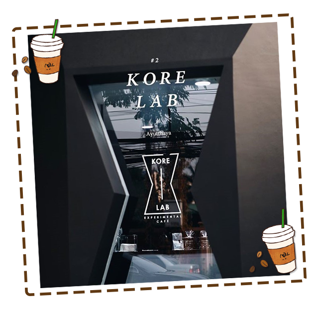
<h4><p align = "center">"วิดีโอบรรยากาศภายในร้าน"</p></h4>
<p align="center"><video width="900" height="650" controls>
<source src= "video/v1.mp4" type>
<h4><p align = "center">"มุมถ่ายรูปยอดฮิต"</p></h4>
<h6><p align = "center">"มุมถ่ายรูปของร้านจะเป็นส่วนตรงบาร์ เเละหน้าร้าน รอบๆร้านๆ วิวของรอบๆร้านเป็นมุมที่ดีเหมาะเเก่การถ่ายรูปสวยๆเป็นอย่างมาก"</p></h6>
<p align = "center">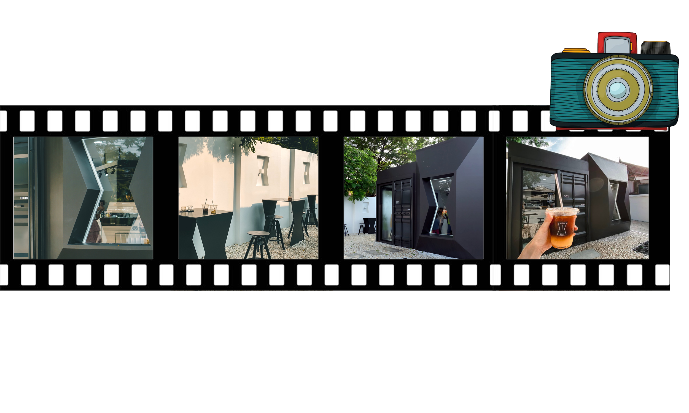
<p align = "center">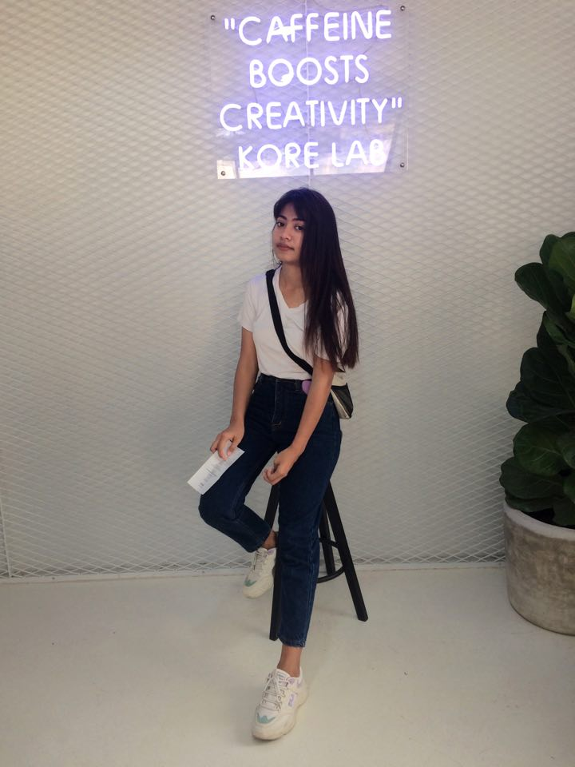
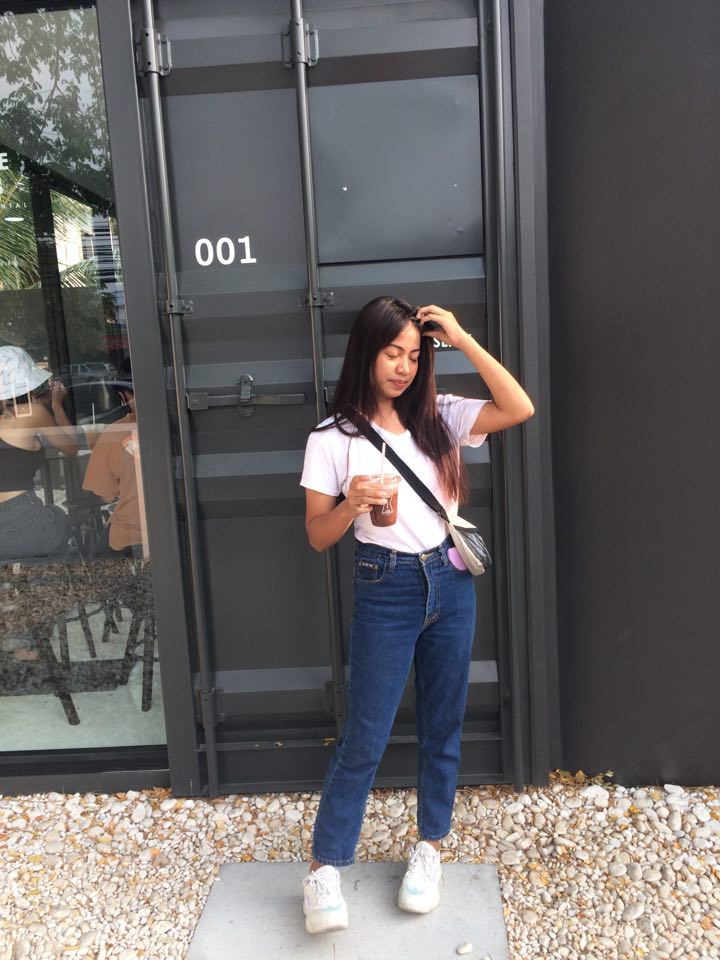
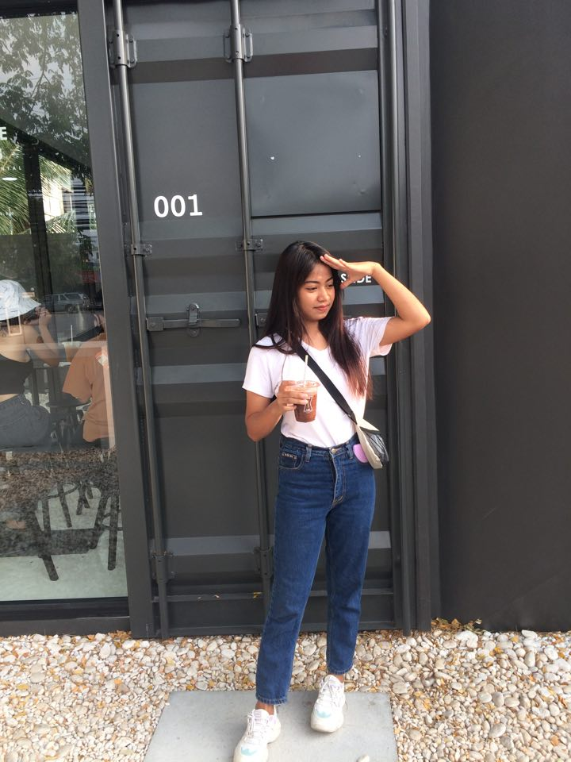
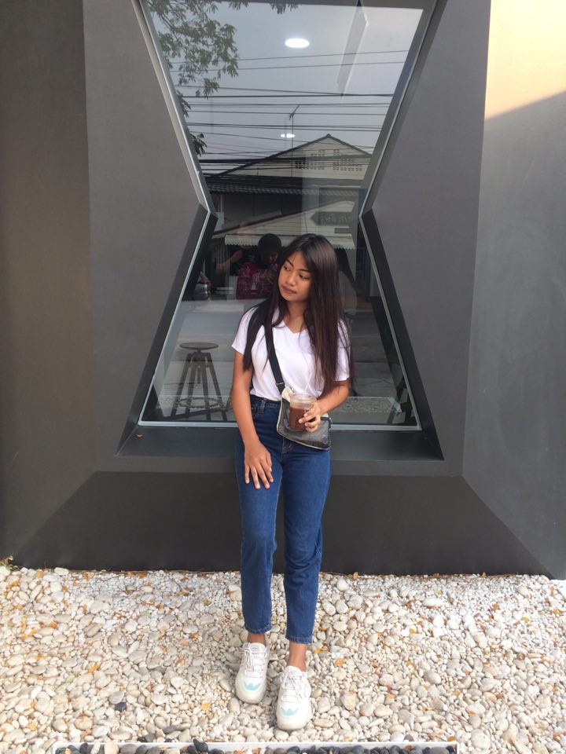
<h4><p align = "center">"เมนูเเนะนำของร้าน"</p></h4>
<p align = "center">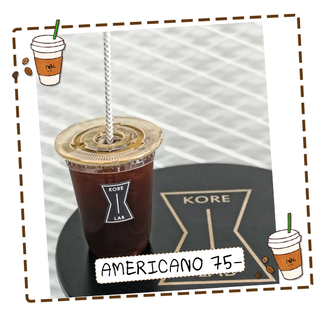
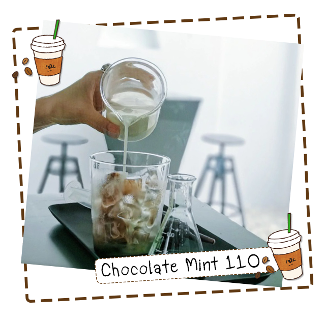
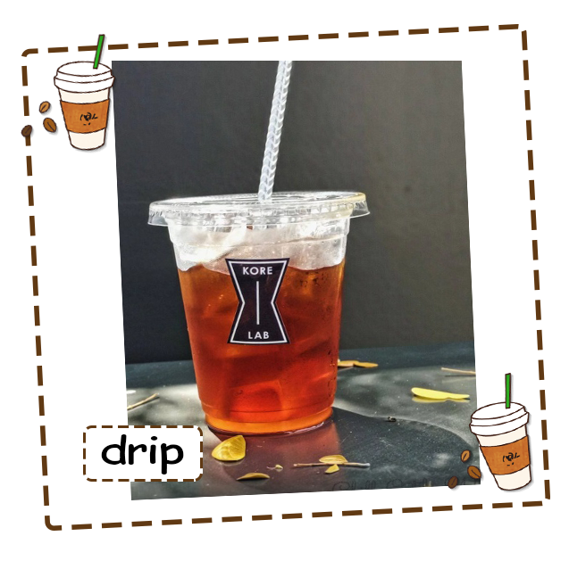
<h4><p align = "center">"ราคากาแฟเเละขนม"</p></h4>
<p align = "center">
<h4><p align = "center">"วิดีโอเพิ่มเติม"</p></h4>
<p align="center">
<iframe width="800" height="650" src="https://www.youtube.com/embed/MjJ4RP4Ejls?start=1" frameborder="0" allow="accelerometer; autoplay; encrypted-media; gyroscope; picture-in-picture" allowfullscreen></iframe>
<center>
<h4><p align="center">แผนที่การเดินทางไปร้าน</p></h4>
<p align="center">
<iframe src="https://www.google.com/maps/d/embed?mid=1QZmC-K4_2oqotjWf0u9XUomiwFjKTdDI" width="800" height="650"></iframe>
<center>
<h4><p align="center">ที่ตั้งของร้าน</p></h4>
<h6><p align = "center">"ป่ามะพร้าว ตำบลท่าวาสุกรี อำเภอ พระนครศรีอยุธยา จังหวัดพระนครศรีอยุธยา 13000"</p></h6>
<p><a href="#top">Back to top</a></p>
<h4><p align="center">ช่องทางการติดต่อ</p></h4>
<p align = "center">
